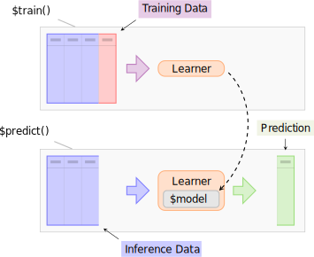

2.3 Learners
Objects of class Learner provide a unified interface to many popular machine learning algorithms in R.
They consist of methods to train and predict a model for a Task and provide meta-information about the learners, such as the hyperparameters you can set.
The base class of each learner is Learner, specialized for regression as LearnerRegr and for classification as LearnerClassif.
Extension packages inherit from the Learner base class, e.g. mlr3proba::LearnerSurv or mlr3cluster::LearnerClust.
In contrast to the Task, the creation of a custom Learner is usually not required and a more advanced topic.
Hence, we refer the reader to Section 6.1 and proceed with an overview of the interface of already implemented learners.
All Learners work in a two-stage procedure: 
- training step: The training data (features and target) is passed to the Learner’s
$train()function which trains and stores a model, i.e. the relationship of target an feature. - predict step: A new slice of data, the inference data, is passed to the
$predict()method of the Learner. The model trained in the first step is used to predict the missing target feature, e.g. labels for classification problems or the numerical outcome for regression problems.
2.3.1 Predefined Learners
The mlr3 package ships with the following minimal set of classification and regression learners to avoid unnecessary dependencies:
mlr_learners_classif.featureless: Simple baseline classification learner (inheriting fromLearnerClassif). In the defaults, it constantly predicts the label that is most frequent in the training set.mlr_learners_regr.featureless: Simple baseline regression learner (inheriting fromLearnerRegr). In the defaults, it constantly predicts the mean of the outcome in training set.mlr_learners_classif.rpart: Single classification tree from package rpart.mlr_learners_regr.rpart: Single regression tree from package rpart.
This set of baseline learners is usually insufficient for a real data analysis. Thus, we have cherry-picked one implementation of the most popular machine learning method and connected them in the mlr3learners package:
- Linear and logistic regression
- Penalized Generalized Linear Models
- \(k\)-Nearest Neighbors regression and classification
- Kriging
- Linear and Quadratic Discriminant Analysis
- Naive Bayes
- Support-Vector machines
- Gradient Boosting
- Random Forests for regression, classification and survival
More machine learning methods and alternative implementations are collected in the mlr3extralearners repository.
A full list of implemented learners across all packages is given in this interactive list and also via mlr3extralearners::list_mlr3learners().
The latest build status of all learners is listed here.
To create an object for one of the predefined learners, you need to access the mlr_learners Dictionary which, similar to mlr_tasks, gets automatically populated with more learners by extension packages.
# load most mlr3 packages to populate the dictionary
library("mlr3verse")
mlr_learners## <DictionaryLearner> with 136 stored values
## Keys: classif.AdaBoostM1, classif.bart, classif.C50, classif.catboost,
## classif.cforest, classif.ctree, classif.cv_glmnet, classif.debug,
## classif.earth, classif.extratrees, classif.featureless, classif.fnn,
## classif.gam, classif.gamboost, classif.gbm, classif.glmboost,
## classif.glmnet, classif.IBk, classif.J48, classif.JRip, classif.kknn,
## classif.ksvm, classif.lda, classif.liblinear,
## classif.liblinearl1l2svc, classif.liblinearl1logreg,
## classif.liblinearl2l1svc, classif.liblinearl2l2svc,
## classif.liblinearl2logreg, classif.liblinearmulticlasssvc,
## classif.lightgbm, classif.LMT, classif.log_reg, classif.mob,
## classif.multinom, classif.naive_bayes, classif.nnet, classif.OneR,
## classif.PART, classif.qda, classif.randomForest, classif.ranger,
## classif.rfsrc, classif.rpart, classif.svm, classif.xgboost,
## clust.agnes, clust.ap, clust.cmeans, clust.cobweb, clust.dbscan,
## clust.diana, clust.em, clust.fanny, clust.featureless, clust.ff,
## clust.kkmeans, clust.kmeans, clust.MBatchKMeans, clust.meanshift,
## clust.pam, clust.SimpleKMeans, clust.xmeans, dens.hist, dens.kde,
## dens.kde_kd, dens.kde_ks, dens.locfit, dens.logspline, dens.mixed,
## dens.nonpar, dens.pen, dens.plug, dens.spline, regr.bart,
## regr.catboost, regr.cforest, regr.ctree, regr.cv_glmnet, regr.earth,
## regr.extratrees, regr.featureless, regr.fnn, regr.gam, regr.gamboost,
## regr.gbm, regr.glm, regr.glmboost, regr.glmnet, regr.IBk, regr.kknn,
## regr.km, regr.ksvm, regr.liblinear, regr.liblinearl2l1svr,
## regr.liblinearl2l2svr, regr.lightgbm, regr.lm, regr.M5Rules,
## regr.mob, regr.randomForest, regr.ranger, regr.rfsrc, regr.rpart,
## regr.svm, regr.xgboost, surv.akritas, surv.blackboost, surv.cforest,
## surv.coxboost, surv.coxph, surv.coxtime, surv.ctree,
## surv.cv_coxboost, surv.cv_glmnet, surv.deephit, surv.deepsurv,
## surv.dnnsurv, surv.flexible, surv.gamboost, surv.gbm, surv.glmboost,
## surv.glmnet, surv.kaplan, surv.loghaz, surv.mboost, surv.nelson,
## surv.obliqueRSF, surv.parametric, surv.pchazard, surv.penalized,
## surv.ranger, surv.rfsrc, surv.rpart, surv.svm, surv.xgboostTo obtain an object from the dictionary we can use lrn() or the generic mlr_learners$get() method, e.g. lrn("classif.rpart").
2.3.2 Learner API
Each learner provides the following meta-information:
feature_types: the type of features the learner can deal with.packages: the packages required to train a model with this learner and make predictions.properties: additional properties and capabilities. For example, a learner has the property “missings” if it is able to handle missing feature values, and “importance” if it computes and allows to extract data on the relative importance of the features. A complete list of these is available in the mlr3 reference.predict_types: possible prediction types. For example, a classification learner can predict labels (“response”) or probabilities (“prob”). For a complete list of possible predict types see the mlr3 reference.
You can retrieve a specific learner using its id:
learner = lrn("classif.rpart")
print(learner)## <LearnerClassifRpart:classif.rpart>
## * Model: -
## * Parameters: xval=0
## * Packages: rpart
## * Predict Type: response
## * Feature types: logical, integer, numeric, factor, ordered
## * Properties: importance, missings, multiclass, selected_features,
## twoclass, weightsThe field param_set stores a description of the hyperparameters the learner has, their ranges, defaults, and current values:
learner$param_set## <ParamSet>
## id class lower upper nlevels default value
## 1: minsplit ParamInt 1 Inf Inf 20
## 2: minbucket ParamInt 1 Inf Inf <NoDefault[3]>
## 3: cp ParamDbl 0 1 Inf 0.01
## 4: maxcompete ParamInt 0 Inf Inf 4
## 5: maxsurrogate ParamInt 0 Inf Inf 5
## 6: maxdepth ParamInt 1 30 30 30
## 7: usesurrogate ParamInt 0 2 3 2
## 8: surrogatestyle ParamInt 0 1 2 0
## 9: xval ParamInt 0 Inf Inf 10 0
## 10: keep_model ParamLgl NA NA 2 FALSEThe set of current hyperparameter values is stored in the values field of the param_set field.
You can change the current hyperparameter values by assigning a named list to this field:
learner$param_set$values = list(cp = 0.01, xval = 0)
learner## <LearnerClassifRpart:classif.rpart>
## * Model: -
## * Parameters: cp=0.01, xval=0
## * Packages: rpart
## * Predict Type: response
## * Feature types: logical, integer, numeric, factor, ordered
## * Properties: importance, missings, multiclass, selected_features,
## twoclass, weightsNote that this operation just overwrites all previously set parameters. If you just want to add a new hyperparameter, retrieve the current set of parameter values, modify the named list and write it back to the learner:
pv = learner$param_set$values
pv$cp = 0.02
learner$param_set$values = pvThis updates cp to 0.02 and keeps the previously set parameter xval.
Note that the lrn() function also accepts additional arguments which are then used to update hyperparameters or set fields of the learner in one go:
learner = lrn("classif.rpart", id = "rp", cp = 0.001)
learner$id## [1] "rp"learner$param_set$values## $xval
## [1] 0
##
## $cp
## [1] 0.001